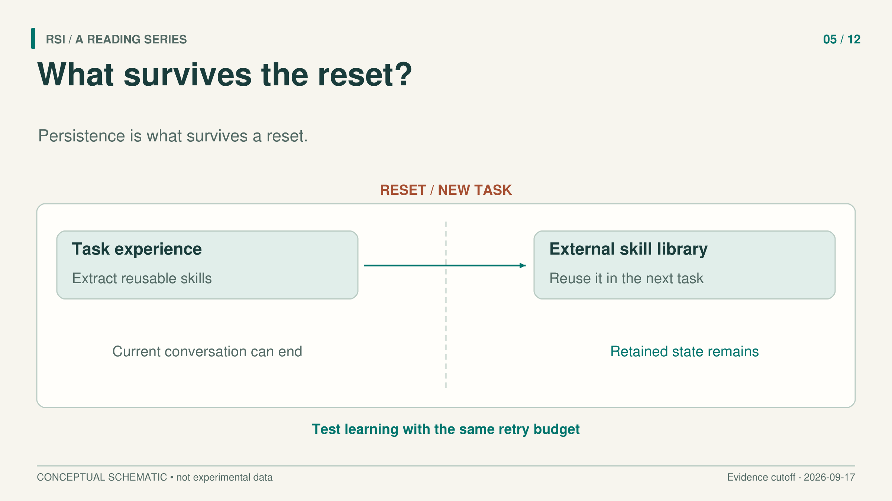
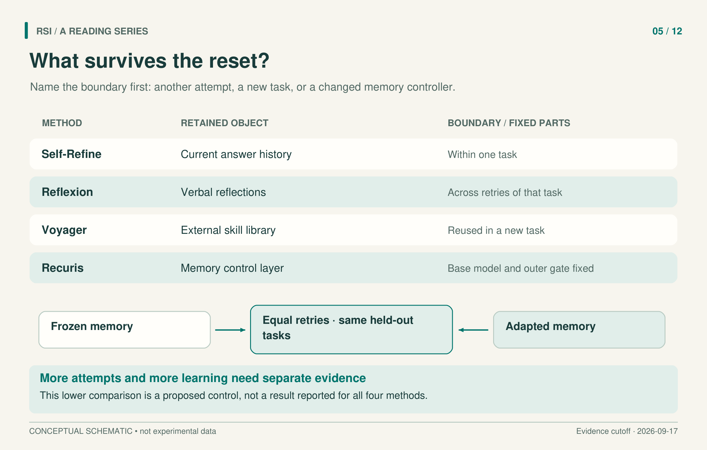

An assistant fixes a bug after seeing a failed test. The program is better. Whether the assistant has acquired anything useful for tomorrow depends on where that change is stored.
Consider an illustrative example: a generated function fails on an empty input. The assistant adds a guard, records the failure in a note, or saves the corrected function in a reusable library. These interventions leave different things behind. A new conversation may lose the first two; another task may retrieve the third. None requires changing the language model’s weights.
The useful question is therefore specific: what survives which reset, and does that surviving state help under a fair comparison?

Start with the lifetime of the state
Self-Refine gives an answer several opportunities to improve. The same fixed language model generates a draft, produces feedback, and revises the draft. Previous outputs and feedback remain in the prompt for that task. The process stops according to a task-specific condition or after at most four rounds.
That history can help the model inspect constraints it missed initially. Its lifetime, however, is the current task. The method does not train the model or supply a learned improver that is retained across unrelated tasks. To evaluate it, first measure the quality of the revised output. A separate experiment would be needed to establish transfer after clearing the conversation.
This distinction also affects the baseline. A multi-round method receives more model calls than a single draft. An observed gain could come from useful feedback, additional chances to sample an answer, or an incomplete initial prompt. Those explanations require different controls.
Huang and colleagues examined precisely these issues. Their findings concern intrinsic self-correction without external feedback, in the models and reasoning tasks tested. Giving a system an external correctness signal can change the outcome, including when that signal only decides whether it should stop revising. The paper also shows why the initial prompt should contain the complete task requirements and why comparisons should account for sampling opportunities. It is not an impossibility result about every future model or every form of revision.
Reflection preserves a lesson between attempts
Reflexion adds a more explicit memory. An agent attempts a task; an evaluator supplies feedback; a reflection step compresses the trajectory and feedback into verbal lessons. A bounded memory places those lessons in the prompt for later attempts. The model’s weights remain fixed.
The immediate persistence here is across retries of the same task. The feedback also depends on the environment. Question answering can use exact matching against reference answers. Interactive environments can supply success signals. Code tasks use generated tests and their execution results. These signals carry different kinds of information and different failure modes.
For example, the paper reports a final HumanEval Python pass@1 of 91.0%, compared with 80.1% for its GPT-4 baseline. On MBPP Python, the reported result falls from the baseline’s 80.1% to 77.1%. The authors connect that decline to false positives in generated tests: a faulty program can pass an inadequate test and receive misleading feedback.
Here, pass@1 describes one final submission after internal testing and revision. It does not mean one language-model call. A memory can preserve a useful diagnosis, but it can also preserve a mistaken one. Its quality depends partly on the evidence from which the diagnosis was written.
Skills can cross a task boundary
Voyager stores executable skills in an external library. In Minecraft, a fixed GPT-4 generates goals and code, uses observations and execution errors to revise that code, and also participates in judging success. Successful programs enter the skill library. Later tasks retrieve relevant programs and use them as building blocks.
This creates an observable persistence test: reset the world and inventory while retaining the library. The authors evaluated four previously unseen tasks, with three trials per task. The library condition succeeded in all trials. Removing the library reduced success on the diamond-pickaxe task to two out of three; the other three tasks still succeeded in every trial, generally with more prompting iterations.
The evidence therefore includes efficiency improvements and a success-rate difference on one small test. It does not establish that every task requires the library or that the skills transfer broadly across domains. A prompting iteration is also a paper-specific interaction count, not a complete measure of tokens, money, or latency.

The rows compare what is retained. They do not describe a necessary progression, and the equal-budget comparison is a measurement design rather than a plotted experimental result.
The rules for using memory can change too
Recuris makes parts of a memory control layer editable: experience skills, working-memory rules, invocation rules, and runtime checkers. This goes beyond appending another note. A patch can change when a skill is called or what evidence the agent requires before treating a step as complete.
The outer mechanism remains fixed. The base model, tools, Meta-Agent, patching process, and acceptance gate do not evolve. Editable runtime checkers and the external gate approving patches are different components. The authors’ term “bounded recursive self-improvement” refers to this memory-layer loop, where changed behavior generates evidence for subsequent patches.
In one retail run, versions were evaluated on the same 86 held-out tasks with four evaluations per task. Success rose from 54.07% initially to a peak of 71.51%, then ended at 63.37%. Those results support a finite sequence of gains on the reported held-out tasks. Reporting only the peak would hide the subsequent decline.
Give both systems the same chances
Recuris also offers a useful control in a different setting: adaptation while retrying the current Terminal-Bench 2.1 task. On 87 tasks, both arms had up to four attempts and stopped at the first success. Frozen seed memory solved 51 tasks, or 58.6%; adaptation solved 53, or 60.9%. The paired difference was 2.3 percentage points, with McNemar p = .774. A separate evaluation ran four untruncated rollouts with seed memory and with the resulting adapted memory, without stopping after an earlier success. In that evaluation, the reported 95% confidence intervals for the differences in avg@4 (average success across four rollouts) and pass@4 (at least one success) all included zero.
Compare that with a single-attempt baseline and the apparent gain becomes much larger. It would be misleading to attribute the whole difference to learning. The matched comparison isolates the additional contribution of adaptation more closely, while leaving substantial uncertainty about that contribution in this experiment. Matching attempts is also only one cost control; tokens, tool execution, and elapsed time may still differ.
For a new memory system, specify the reset boundary before interpreting its score. Clear the conversation to test what survives outside context. Change tasks to test transfer. Keep retry opportunities comparable to assess the contribution of adaptation. Preserve both peak and final versions when evaluating a sequence.
A reset experiment should also specify exactly what was cleared. Resetting a conversation while retaining an external cache tests a different persistence boundary from removing both the conversation and the reusable skills.
An unchanged model can support a changing system. Evidence for that change becomes more informative when it identifies the retained state, the feedback that shaped it, and the conditions under which it remains useful.
Selected primary sources
Self-Refine · Intrinsic self-correction study · Reflexion · Voyager · Recuris.
Adapted from a book whose literature inclusion cutoff is September 17, 2026. Results refer to the versions examined there, not a new literature search.